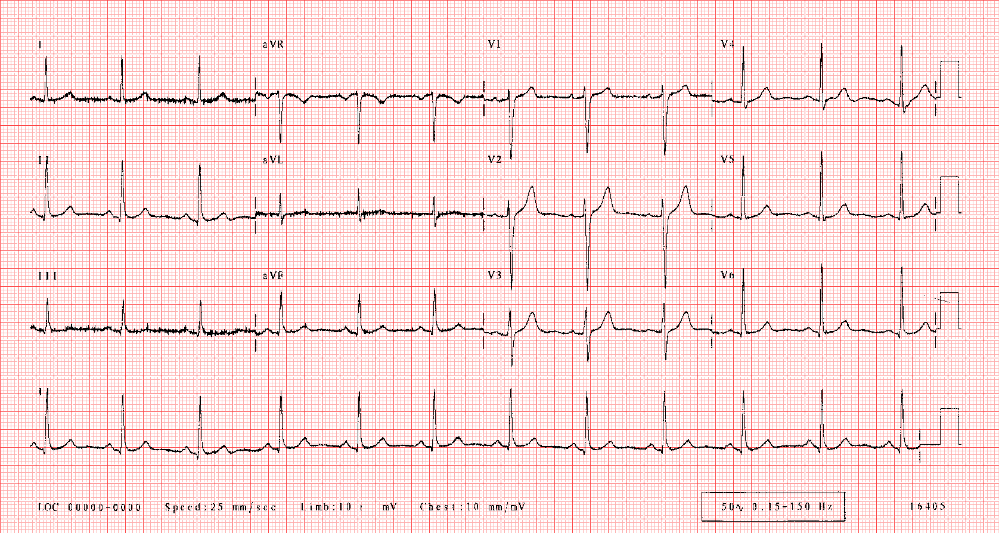

Normal adult 12-lead ECG
The diagnosis of the normal electrocardiogram is made by excluding any recognised abnormality. It's description is therefore quite lengthy.
- normal sinus rhythm
- each P wave is followed by a QRS
- P waves normal for the subject
- P wave rate 60 - 100 bpm with less than 10% variation
- normal QRS axis
- normal P waves
- height less than 2.5 mm in lead II
- width less than 0.11 s in lead II
- normal PR interval
- 0.12 to 0.20 s (3 - 5 small squares)
- normal QRS complex
- less than 0.12 s duration (3 small squares)
- no pathological Q waves
- no evidence of left or right ventricular hypertrophy
- normal QT interval
- Calculate the corrected QT interval (QTc) by dividing the QT interval by the square root of the preceeding R - R interval. Normal = 0.42 s.
- normal ST segment
- no elevation or depression
- normal T wave
- normal U wave